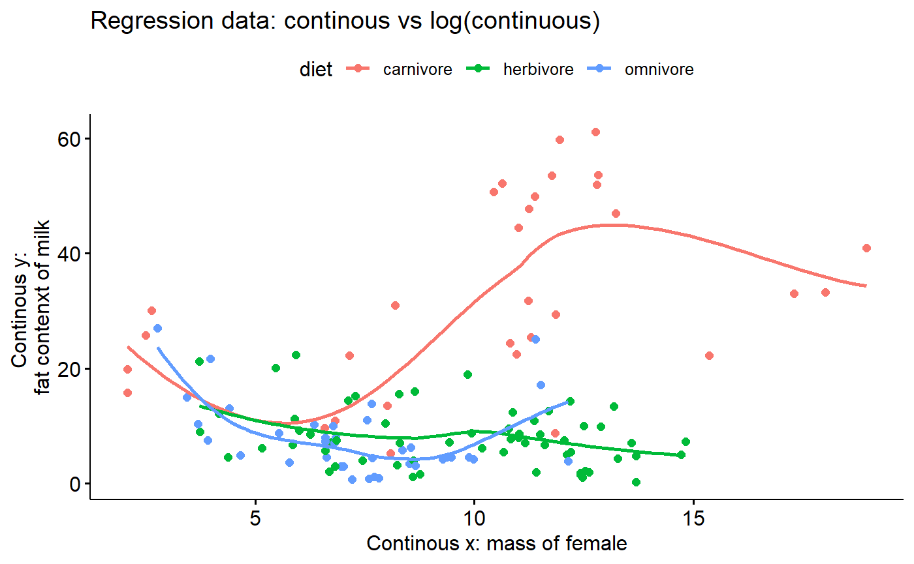

d-data_exploration.RmdThe data collated by Skibiel et al contain information on several components of milk, including fat, protein, sugar, and total energetic content (“energy”). Here we’ll look at multple y variables, though for most of the subsequent tutorials we’ll focus on % of fat in milk
The data also contains several “continous predictors” / covariates (x variables). These include
THere are also Several “categorical predictors”
Finally, there are columns containing taxonomic information
library(ggplot2)
library(cowplot)
library(ggpubr)
library(arm)
library(dplyr)
library(GGally)If you haven’t already, download the mammalsmilk package from GitHub (note the “S” between mammal and milk). This is commented out in the code below - only run the code if you have never downloaded it before, or haven’t recently (in case its been updated)
# install_github("brouwern/mammalsmilk")You can then load the package with library()
library(mammalsmilk)Look at the data
# Hom much data?
dim(milk)## [1] 130 19
#focal columns
##(use negative indexing to drop some)
summary(milk[,-c(2,3,8,9)])## ord mass.fem gest.mo lac.mo
## Artiodactyla :23 Min. : 8 Min. : 0.400 Min. : 0.300
## Carnivora :23 1st Qu.: 857 1st Qu.: 1.405 1st Qu.: 1.625
## Primates :22 Median : 5716 Median : 5.000 Median : 4.500
## Rodentia :17 Mean : 2229475 Mean : 5.624 Mean : 6.092
## Chiroptera :10 3rd Qu.: 107500 3rd Qu.: 8.365 3rd Qu.: 8.225
## Diprotodontia:10 Max. :170000000 Max. :21.460 Max. :42.000
## (Other) :25
## mass.litter diet arid biome
## Min. : 0.3 carnivore:32 no :91 aquatic : 22
## 1st Qu.: 42.0 herbivore:61 yes:39 terrestrial:108
## Median : 423.5 omnivore :37
## Mean : 52563.8
## 3rd Qu.: 7038.2
## Max. :2272500.0
##
## N fat gest.month lacat.mo
## 4 :13 Min. : 0.20 Min. : 0.400 Min. : 0.300
## 3 :11 1st Qu.: 4.65 1st Qu.: 1.405 1st Qu.: 1.625
## 6 :10 Median : 8.55 Median : 5.000 Median : 4.500
## 7 : 9 Mean :13.99 Mean : 5.624 Mean : 6.092
## 5 : 8 3rd Qu.:16.82 3rd Qu.: 8.365 3rd Qu.: 8.225
## 24 : 5 Max. :61.10 Max. :21.460 Max. :42.000
## (Other):74
## prot sugar energy
## Min. : 1.100 Min. : 0.02 Min. :0.360
## 1st Qu.: 4.125 1st Qu.: 3.00 1st Qu.:0.965
## Median : 6.750 Median : 4.70 Median :1.365
## Mean : 6.673 Mean : 4.94 Mean :1.680
## 3rd Qu.: 9.200 3rd Qu.: 6.60 3rd Qu.:2.045
## Max. :15.800 Max. :14.00 Max. :5.890
## NA's :16 NA's :16This code is dense but let’s us look at the most common families
Tabulate number of families
table.fam <- table(milk$fam)Determine order in data set (not taxonomic order)
numeric.order. <- order(table.fam,
decreasing = T)Largest families, in order
table.fam <- data.frame(table.fam[numeric.order.][1:13])
names(table.fam) <- c("fam","freq")
table.fam## fam freq
## 1 Bovidae 13
## 2 Cercopithecidae 8
## 3 Cervidae 7
## 4 Muridae 7
## 5 Otariidae 7
## 6 Phocidae 7
## 7 Lemuridae 5
## 8 Macropodidae 5
## 9 Pteropodidae 5
## 10 Balaenopteridae 4
## 11 Equidae 4
## 12 Canidae 3
## 13 Leporidae 3Plot as barplot; some added gplot code to rotate the axis lables
ggbarplot(data = table.fam,
y = "freq",
x = "fam") +
theme(axis.text.x = element_text(angle = 90,
hjust = 1,
vjust = 0.5))Tabulate number of orders
table.ord <- table(milk$ord)Determine order (numeric order, not taxonomic order)
numeric.order. <- order(table.ord,
decreasing = T)Largest orders, in order
table.ord <- data.frame(table.ord[numeric.order.][1:9])
names(table.ord) <- c("ord","freq")
table.ord## ord freq
## 1 Artiodactyla 23
## 2 Carnivora 23
## 3 Primates 22
## 4 Rodentia 17
## 5 Chiroptera 10
## 6 Diprotodontia 10
## 7 Perrissodactyla 7
## 8 Cetacea 6
## 9 Lagomorpha 3ggbarplot(data = table.ord,
y = "freq",
x = "ord") +
theme(axis.text.x = element_text(angle = 90,
hjust = 1,
vjust = 0.5))To condense my plotting code I will save titles and axis labels to R objects.
Note that for ylab. I insert a line break by putting a backslash in from of an n, for “new line”
main. <- "Regression data: continous vs continuous"
xlab. <- "Continous x: mass of female"
ylab. <- "Continous y: \nfat contenxt of milk"Note that the plot is dominated an outlier, which the whales!
ggscatter(y = "fat",
x = "mass.fem",
data = milk,
main = main.,
xlab = xlab.,
ylab = ylab.)A similar graph can be made using the stock ggplot function qplot(), except the variables are not quoted
qplot(y = fat, # no " " !
x = mass.fem,
data = milk,
main = main.,
xlab = xlab.,
ylab = ylab.) We can use the mutate() function in dplyr to take the log.
milk <- milk %>% dplyr::mutate(mass.fem.log = log(mass.fem))Look at transformed data
summary(milk$mass.fem.log)## Min. 1st Qu. Median Mean 3rd Qu. Max.
## 2.079 6.753 8.651 9.105 11.584 18.951Plot transformed data
main.new <-"Regression data: continous vs log(continuous)"
ggscatter(y = "fat",
x = "mass.fem.log",
data = milk,
main = main.new,
ylab = ylab.,
xlab = xlab.)Helps visualize trends
ggscatter(y = "fat",
x = "mass.fem.log",
add = "loess", #smoother
data = milk,
main = main.new,
ylab = ylab.,
xlab = xlab.)Color-code diets. This might take a second to render.
ggscatter(y = "fat",
x = "mass.fem.log",
color = "diet",
add = "loess",
data = milk,
main = main.new,
ylab = ylab.,
xlab = xlab.)
ggscatter(y = "fat",
x = "mass.fem.log",
color = "diet",
facet.by = "biome", # facet command
data = milk,
main = main.new,
ylab = ylab.,
xlab = xlab.)It can be useful to make boxplot just by categorical variables. For me, this plot highlights that almost all carnivores are aquatic, and they have a wide range of fat contents.
ggboxplot(data = milk,
add = "jitter",
color = "biome",
y = "fat",
x ="diet")Let’s look at just a subset of the data * Primates * Rodents (this is why we use mouse models) * Rabbits
data("milk_primates")Compare original data and our working subset
# Original data
dim(milk)## [1] 130 20
#out working subset
dim(milk_primates)## [1] 42 15Do log transform
milk_primates <- milk_primates %>% dplyr::mutate(mass.fem.log = log(mass.fem))Make scatterplot; ggscatterhist() allows plots to be put in margin
ggscatterhist(y = "fat",
x = "mass.fem.log",
data = milk_primates,
margin.plot = "boxplot") This code is fairly dense. What I’ll do is annotate some selected data points with the species names.
First, make some labels.
#make column to hold particular spp.names
milk_primates$spp.focal <- ""
#select spp of interest
## This is just accross a span of the data
i.focal <- c(17,18,19,23,30,34,39)
#look at focals
milk_primates$spp.focal[i.focal]## [1] "" "" "" "" "" "" ""
#add spp names to spp.focal column
milk_primates$spp.focal[i.focal] <- as.character(milk_primates$spp[i.focal])
milk_primates$spp.focal <- gsub("(^.*)( )(.*)","\\1",milk_primates$spp.focal)plot with names using some fancier ggplot code.
ggplot(data = milk_primates,
aes(y = fat,
x = mass.fem.log)) +
geom_point()+
geom_text(aes(label=spp.focal),
hjust=1,
vjust=0)ggscatter(y = "fat",
x = "mass.fem.log",
add = "reg.line", #regression line
conf.int = TRUE, #confidence int.
data = milk_primates) Color code by
ggscatter(y = "fat",
x = "mass.fem.log",
color = "ord",
add = "reg.line", #regression line
conf.int = TRUE, #confidence int.
data = milk_primates) We can also look at othe predictor besides the size of the mother, such as how many months are spent gestating.
First, we should log transform them.
milk_primates <- milk_primates %>% dplyr::mutate(gest.mo.log = log(gest.month),
lacat.mo.log = log(lacat.mo),
mass.litter.log = log(mass.litter))Let’s look at a relationship fat ~ log(gest.month)
Compare all data compiled with by order
#all data combined
no.order <- ggscatter(y = "fat",
x = "gest.mo.log",
data = milk_primates,
#color = "ord",
add = "reg.line",
conf.int = TRUE)
#split by order
by.order <- ggscatter(y = "fat",
x = "gest.mo.log",
data = milk_primates,
color = "ord",
add = "reg.line",
conf.int = TRUE)
plot_grid(no.order,by.order)% Fat generally declines as gestation duration increases. So, the longer animal is pregnant, the less fatty the milk is. However, this trend largely disappears when we plot by order. That is because the Lagomorph data is vary noisy, resulting in a flat line. The negative trend seen when looking at all of the data combined is largely drive by the fact that lagomorphs tend to have higher milkfat and shorter gestations, and primates have lower milk fat and longer gestations. This trend is therefore probably driven mostly by differenes between orders, not due to an underlying relationship with gestation.
Another relationship to consider fat ~ log(lacat.mo)
Compare all data compiled with by order
no.order <- ggscatter(y = "fat",
x = "lacat.mo.log",
data = milk_primates,
#color = "ord",
add = "reg.line",
conf.int = TRUE)
by.order <- ggscatter(y = "fat",
x = "lacat.mo.log",
data = milk_primates,
color = "ord",
add = "reg.line",
conf.int = TRUE)
plot_grid(no.order,by.order)Overall, the % Fat generally declines as lactation duration increases. So, the longer time children are dependent, lower milk fat.
Again, however, there is strong phyolgenetic single. Within
fat ~ log(mass.litter)
no.order <- ggscatter(y = "fat",
x = "mass.litter.log",
data = milk_primates,
#color = "ord",
add = "reg.line",
conf.int = TRUE)
by.order <- ggscatter(y = "fat",
x = "mass.litter.log",
data = milk_primates,
color = "ord",
add = "reg.line",
conf.int = TRUE)
plot_grid(no.order,by.order)ALl of the graphs of all of the predictors looked basically the same. One reason is that all of the predictors are highly correlated, so they are all basically indicating something similar about the animals.
We can get a sense for these correlations using the ggpairs() fucntion in the GGally package.
vars. <- c("fat","gest.mo.log",
"mass.fem.log","lacat.mo.log" , "mass.litter.log")
GGally::ggpairs(data = milk_primates,
column = vars.,
diag =NULL )